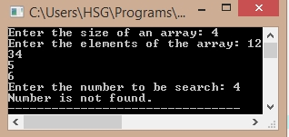

/*C Program for BinarySearch*/
#include<stdio.h>
int main()
{
int a[10],i,n,m,c,l,u;
printf("Enter the size of an array: ");
scanf("%d",&n);
printf("Enter the elements of the array: " );
for(i=0;i<n;i++)
{
scanf("%d",&a[i]);
}
printf("Enter the number to be search: ");
scanf("%d",&m);
l=0,u=n-1;
c=binary_search(a,n,m,l,u);
if(c==0)
printf("Number is not found.");
else
printf("Number is found.");
return 0;
}
int binary_search(int a[],int n,int m,int l,int u)
{
int mid,c=0;
if(l<=u)
{
mid=(l+u)/2;
if(m==a[mid])
{
c=1;
}
else if(m<a[mid])
{
return binary_search(a,n,m,l,mid-1);
}
else
return binary_search(a,n,m,mid+1,u);
}
else
return c;
}
Output:
